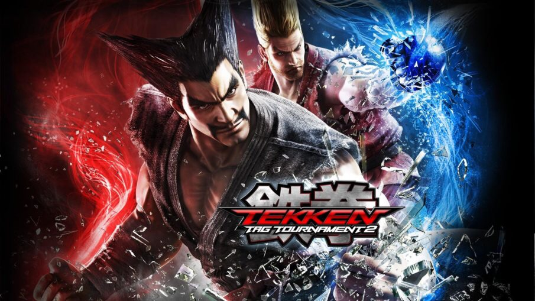

Date: 2011-09-14
Title: Tekken Tag Tournament 2
Summary: A massive tag-based fighting game with one of the largest rosters in the series.
Categories: Fighting, Modern
Type: Game Files
File Size: ~16 GB
Format: Digital / Disc
Region: Global
Platform: Arcade / PS3 / Xbox 360 / Wii U
Tekken Tag Tournament 2 expands on the tag battle system with a huge roster of characters from across the Tekken series. Players can switch between fighters, perform tag combos, and use advanced mechanics like Tag Assault and Tag Crash. The game offers multiple modes, improved graphics, and deep customization, making it one of the most content-rich Tekken games ever released.
Note: Support Original Game By buying Official CD of Tekken Tag 2 . --Tekken Tag 2 Can be Played By either a real Ps3,X360,Wii u or By Ps3,X360,Wii u Emulatores via Pc. ⬇ Download (PS3 Version) ⬇ Download (Xbox 360 Version) ⬇ Download (Wii u Version)